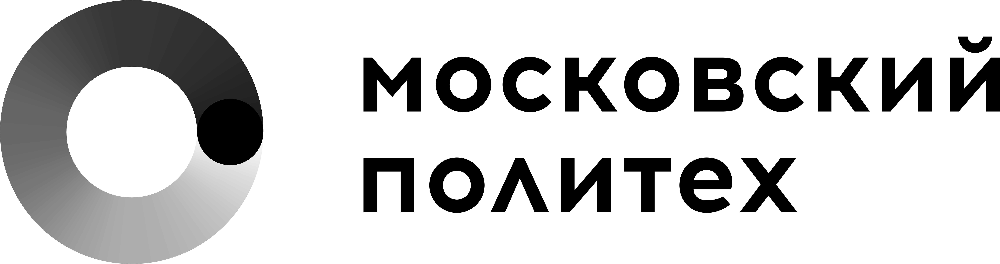

Ссылки на организации-партнёры, источники, которые помогают лучше понять суть проекта, и материалы, используемые при создании брошюры.
Наш главный партнёр и заказчик проекта.

Ведущий технический университет России. Место, где студенты получают не только знания, но и практический опыт — в том числе через проектную деятельность.
Официальный сайт →Прямые ссылки на результаты проекта и документацию.
Источники фотографий и актуальной информации, использованные при создании брошюры.
Программы и сервисы, которые использовала команда при создании брошюры.
Материалы, помогающие глубже понять задачи, которые решает брошюра.